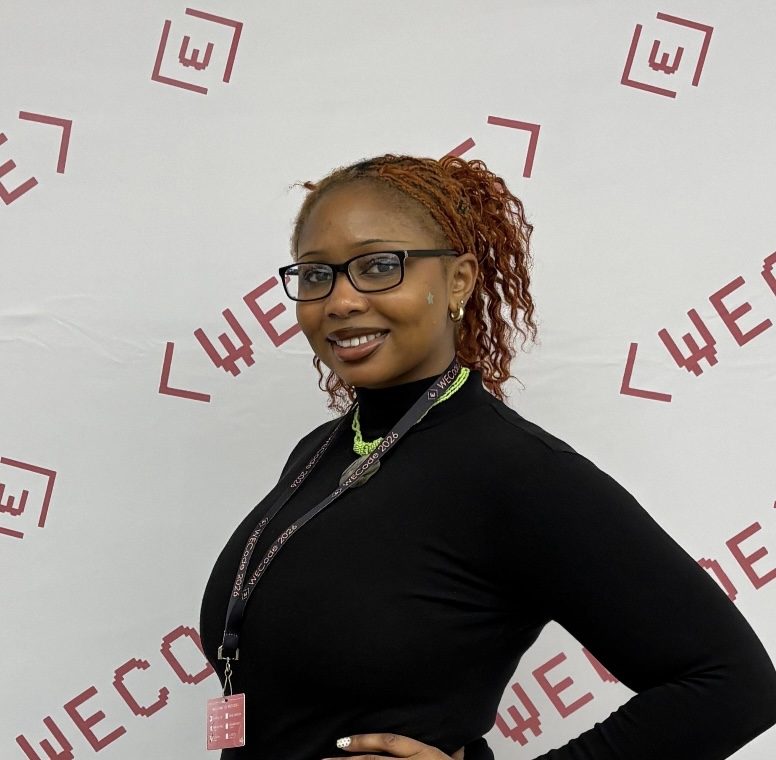

I sit at the vibrant intersection of human-computer interaction, creative technology, and software engineering. From training real-time diffusion models with structural sketch conditioning to building production-grade bilingual web applications, I care deeply about creating intelligent tools that feel intuitive, responsive, and truly empowering to humans.
Foundational computer science theory and applied computational rigor completed at The College of Wooster.
Asymptotic runtime bounds, divide-and-conquer paradigms, greedy strategies, dynamic programming, and NP-completeness reductions.
Implementation of binary search trees, graph traversals (BFS/DFS), priority heaps, hash tables, and computational trade-offs.
Agile development lifecycles, test-driven development (TDD), modular architecture, code reviews, and scalable system integration.
Relational algebra, schema normalization (3NF/BCNF), SQL query optimization, transactions, ACID consistency, and indexing.
Comparative paradigm analysis (functional, object-oriented, imperative), type systems, operational semantics, and memory models.
Deep neural architectures, latent diffusion, generative synthesis, loss functions, and interactive human-AI co-creation pipelines.
Numerical linear algebra, matrix factorizations, floating-point stability, discrete transformations, and computational modeling.
Multivariate rate analysis, gradient descent mechanics, continuous modeling, partial derivatives, and optimization frontiers.
Generative diffusion models often suffer from unpredictable composition when driven solely by text prompts. This year-long independent study investigated how structural conditioning via real-time sketches and edge maps constraints Stable Cascade to follow precise user intent.
Primary Model: Stable Cascade (Stage A, B, C)
Conditioning: Real-time edge detection & sketch conditioning
Sub-Second Engine: StreamDiffusion + ComfyUI
Institutions: Goldsmiths (London) & Wooster
A production-grade, bilingual (English & Spanish) web application designed to help graduate students and families navigate the sunset of federal Grad PLUS loans. Features interactive borrowing cap calculators across 4 degree tiers (Associate to Ph.D./M.D.), federal grandfather clause analysis, and transparent private lender comparison tools.
An intelligent behavioral wellness platform that leverages machine learning to curate personalized habit stacks tailored to user chronotypes and energy curves, while keeping users supported in accountability circles.
Implementation of high-frame-rate computer vision workflows for multi-class object detection, bounding-box regression, and edge video stream inference utilizing modern convolutional backbones and OpenCV.
Conducted ecological laboratory experiments on mosquito population dynamics. Automated biological data ingestion, statistical hypothesis testing, and scientific visualization for published findings and institutional grant submissions.
Algorithmic modeling and dynamic programming implementations for genomic sequence alignment, motif discovery, and nucleotide pattern matching geared toward personalized medicine diagnostics.
Responsive digital design system incorporating organic shapes, warm botanical color palettes, custom spring physics cursor, and accessible layout architecture.
"nature is the best designer."
As a Computer Science major with a minor in Young Adolescence Education, I view technical empowerment as an act of accessibility. I’ve guided over 40 middle and high school students through their first lines of code, demystifying digital tools and turning frustration into independent debugging mastery.
Accessibility: Demystified intimidating syntax into creative building blocks for students who had never opened a terminal.
Self-Efficacy: Guided students from simple tutorials to self-directed games, animations, and computational art.
Culture of Curiosity: Built collaborative classroom environments where "broken code" is celebrated as a discovery step.
"One of the most rewarding parts of teaching was watching students go from being stuck on simple errors to independently debugging their own projects. That shift from frustration to confidence was often more important to me than the final result."
Awarded by the Department of Computer Science at The College of Wooster for original research in structural conditioning for image synthesis.
Selected fellow to attend the world’s largest student-led Women in Tech conference at Harvard University.
Selected to present independent machine learning research at the National Conference on Undergraduate Research (2026).
Secured Third Place at the 35th Annual Denison University Spring Programming Contest (2025 competitive programming).